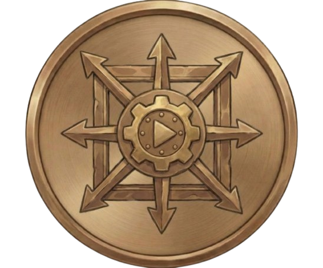
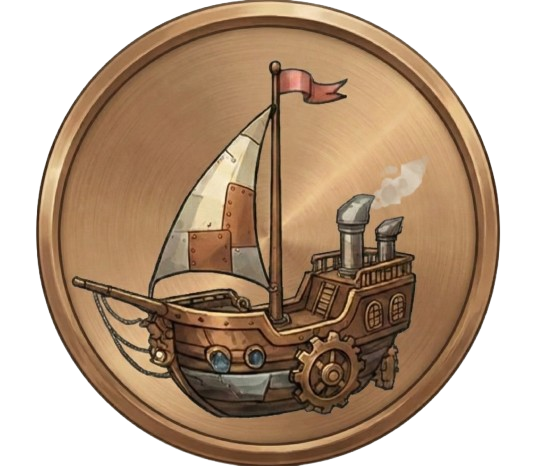
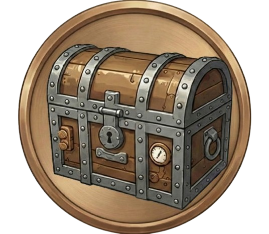

10
0
0Irányítás: Használd a W, A, S, D gombokat a csónak vezetéséhez. Az egeret (bal gomb nyomva tartása) használhatod a kamera forgatásához, és a görgővel tudsz közelíteni-távolítani. A zenét az M betűvel kapcsolhatod.
Cél: Szedj össze annyi hártyát a tengeren, amennyit csak tudsz! Vigyázz, mert a léghajó üldözőbe vehet.
Kvíz: Amikor felveszel egy hártyát, válaszolnod kell egy kérdésre. Egyes hártyák lehetőséget adnak a "Dupla vagy semmi" kockáztatásra is!
Bázis: Visszatérve a kikötői bázisra (a zöld fénnyel világító sziget), biztonságban vagy az ellenségtől. A kikötőben megjelenő pecsétre kattintva visszatérhetsz a fedélzetre, lementve a hártyákat és a csónakod állapotát.